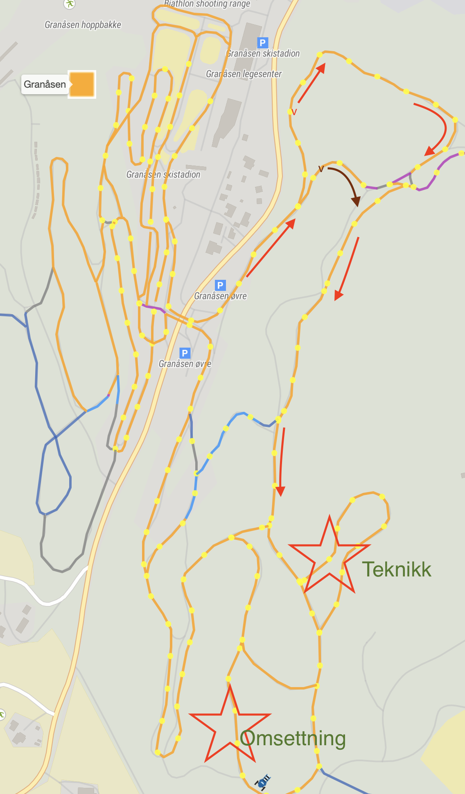

Skitrening Skøyting (Dobbeldans)
Strindheim IL Ski G/J 11/12år
Feb 28, 2021
Sammedrag
- Oppmøte: kl. 18.30 Granåsen Skistadion
- Avslutning: kl. 20.00
Fokus på Teknikk (Dobbeldans), Lek (Stafett), Felleskap, Skiglede:
- Oppvarming 15'
- Hoveddel Teknikk 40'
- Hoveddel Omsetting 20'
- Stafett 15'
- Strindheimrop
Oversikt Løype

Opplegg
Oppmøte/Oppvarming
- Kort trenersamtale/koordinasjon under oppmøte
- En trener i front/midt/bak
- Eventuelt snarvei for de bakerste.
Teknikk
Dobbeldans
Ide:
- Flere øvelser (frem og tilbake) som bygger opp på hverandre
- Fokus på armsving og balanse (stå langt og høyt)
Gjennomføring:
- Sitonen med og uten staver, begge sider
- Introduser teknikk, forklar prinsippene
- Øvelse i stand (se video)
- Overgang fra Staking – Sitonen – Dobbeldans (se video)
Omsetting
Ide:
- Gjennomfør dobbeldans i variert terreng
- Tilpass frekvens
Gjennomføring:
- Flere runder frem og tilbake
Stafett
- Som vanlig eller litt nytt (med balanse element, se video)